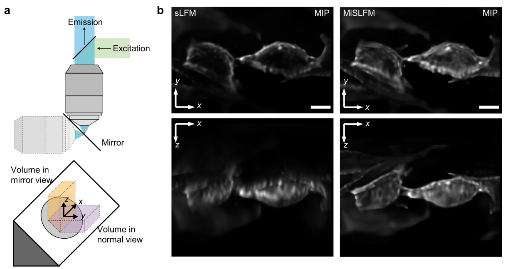
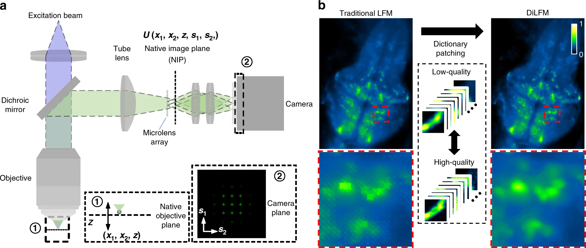
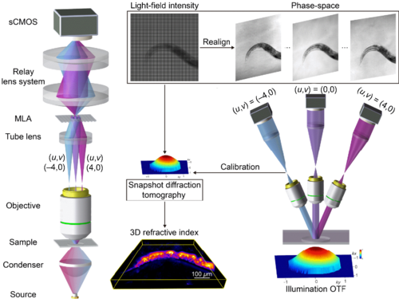
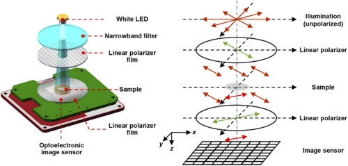
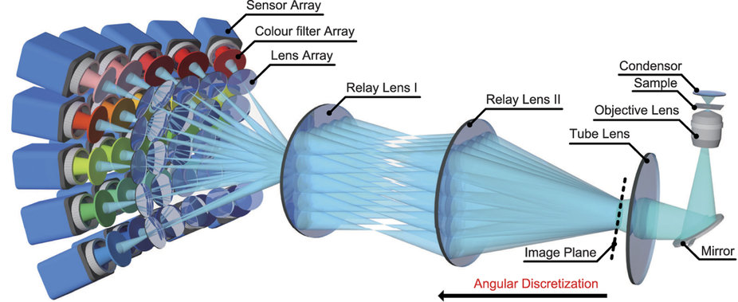

|
Postdoc Associate (Since 2022)
NELVT (National Engineering Laboratory for Video Technology)
School of Computer Science, Peking University
Beijing 100087, China
mailto: boxiong11@outlook.com
|
| Ph.D. Aug. 2015 - Jul. 2022,
Department of Automation, Tsinghua University, Beijing |
| Visiting Research Student Nov. 2017 - Nov. 2019,
Janelia Research Campus, HHMI, Ashburn, Virginia |
| B.Eng. Aug. 2011 - Jul. 2015, Department of Automation, Tsinghua University, Beijing |
| Spike Vision & Imaging |
| Computational Optics & Imaging, Light-field microscopy, Light-sheet fluorescence Microscopy |
 |
| Mirror-enhanced Scanning Light-field Microscopy. |
Light: Science & Applications (Light) 2021 |
| This paper proposes a mirror-enhanced scanning LFM (MiSLFM) to achieve long-term high-speed 3D imaging at super-resolved axial resolution with a single objective, by fully exploiting the extended depth of field of LFM with a tilted mirror placed below samples. We demonstrated that superior axial resolution facilitates more robust blood cell tracking in zebrafish larvae at high speed. |
|
 |
| Dictionary Light-field Microscopy. |
Light: Science & Applications (Light) 2021 |
| In this paper, we thoroughly analyze different kinds of artifacts and present a new LFM technique termed dictionary LFM (DiLFM) that substantially suppresses various kinds of reconstruction artifacts and improves the noise robustness with an over-complete dictionary. We show our DiLFM can achieve robust blood cell counting in noisy conditions by imaging blood cell dynamic at 100Hz and unveil more neurons in whole-brain calcium recording of zebrafish with low illumination power in vivo.
|
|
 |
| Snapshot Partially Coherent Diffraction Tomography. |
Physical Review Applied (PRApplied) 2021 |
| This paper propose a partially coherent and snapshot diffraction tomography method based on light-field microscopy. Experiments on freely moving Caenorhabditis elegans are shown accordingly, demonstrating the great potential of the proposed method for label-free 3D imaging of multicellular organisms in vivo at high speed up to the camera frame rate. |
|
 |
| Lensless imaging of plant samples using the cross-polarized light. |
Optics Express (OE) 2020 |
| In this paper, we introduce the cross-polarized illumination into the lensless system for high-contrast and background-free imaging of plant samples. Experiments exhibit the specific and sparse structures of the root system and vessel distribution of samples. |
|
 |
| Snapshot Hyperspectral Volumetric Microscopy. |
Scientific Reports (SR) 2016 |
| This paper proposes a prototype of snapshot hyperspectral volumetric microscopy and an algorithm that computationally reconstructs hyperspectral profiles for high-resolution volumes of ~1000um × 1000um × 500um at video rate by a novel four-dimensional (4D) deconvolution algorithm. |
|
|
You Zhou, Zhouyu Jin, Qianhui Zhao, Bo Xiong† and Xun Cao†. Aberration modeling in deep learning for volumetric reconstruction of light-field microscopy. Lasers & Photonics Reviews, 2023.
|
|
Changqing Su, Yuhan Gao, You Zhou, Yaoqi Sun, Chenggang Yan, Haibing Yin and Bo Xiong†. AutoDeconJ: a GPU accelerated ImageJ plugin for 3D light field deconvolution with optimal iteration numbers predicting. Bioinformatics, 2022.
|
|
You Zhou, Bo Xiong†, Weizhi Song and Xun Cao. Dual-modal light-field micro-endoscopy. Frontiers in Optics + Laser Science, 2022.
|
|
Weizhi Song, You Zhou, Bo Xiong and Xun Cao. Lensless Imaging By Binary Mask Rotation. Frontiers in Optics + Laser Science, 2022.
|
|
Changqing Su, Tianqiang Liu, Chuqiao Chen, Hongkui Wang, Ji Hu, You Zhou, Bo Xiong† and Xun Cao. Analysis of pre-processing methods for lossless compression of multi-component medical images based on latent variable models. Frontiers in Optics + Laser Science, 2022.
|
|
You Zhou*, Bo Xiong*, Weizhi Song, Xu Zhang, Guoan Zheng, Qionghai Dai and Xun Cao. Light-field micro-endoscopy using a fiber bundle: a snapshot 3D epi-fluorescence endoscope. Photonics Research(PR), 2022.
|
|
Weizhi Song, You Zhou, Bo Xiong and Xun Cao. Multi-wavelength Lensless Microscopy Via A Linear Variable Bandpass Filter. Clinical and Translational Biophotonics, 2022.
|
|
Bo Xiong*, Tianyi Zhu*, Yuhan Xiang, Xiaopeng Li, Jinqiang Yu, Zheng Jiang, Yihan Niu, Dong Jiang, Xu Zhang, Lu Fang, Jiamin Wu, and Qionghai Dai. Mirror-enhanced scanning light-field microscopy for long-term high-speed 3D imaging with isotropic resolution. Light: Science & Applications(Light), 2021.
|
|
Yuanlong Zhang*, Bo Xiong*, Yi Zhang, Zhi Lu, Jiamin Wu, and Qionghai Dai. DiLFM: an artifact-suppressed and noise-robust light-field microscopy through dictionary learning. Light: Science & Applications(Light), 2021.
|
|
Bo Xiong*, Xiaoxu Li*, You Zhou, Liejun Wang, Jiamin Wu, and Qionghai Dai. Snapshot Partially Coherent Diffraction Tomography. Physical Review Applied (PRApplied), 2021.
|
|
You Zhou*, Bo Xiong*, Xiaoxu Li, Qionghai Dai, and Xun Cao. Lensless imaging of plant samples using the cross-polarized light. Optics Express (OE), 2020.
|
|
Bo Xiong*, Xiaofei Han*, Jiamin Wu, Hao Xie, and Qionghai Dai. Improving axial resolution of Bessel beam light-sheet fluorescence microscopy by photobleaching imprinting. Optics Express (OE), 2020.
|
|
Yanqin Chen, Bo Xiong, Yujia Xue, Xin Jin, Joseph Greene, and Lei Tian. Design of a high-resolution light field miniscopefor volumetric imaging in scattering tissue. Biomedical Optics Express (BOE), 2020.
|
|
Yanqin Chen, Xin Jin, Bo Xiong. Optical-aberrations-corrected light field re-projection for high-quality plenoptic imaging. Optics Express (OE), 2020.
|
|
Jiamin Wu, Bo Xiong, Xing Lin, Jijun He, Jinli Suo and Qionghai Dai. Snapshot Hyperspectral Volumetric Microscopy. Scientific Reports (SR), 2016.
|
Bo Xiong, Jun Yan, Changqing Su, You Zhou. Lossless compression method and device based on phase space continuity for light field microscopy images. China Patent, CN115604465B, Patent Grant Date Mar, 2023. |
Bo Xiong, Jun Yan, Changqing Su, You Zhou. An evaluation method and device for iterative reconstruction results of light field microscopy. China Patent, CN115357845B, Patent Grant Date May, 2023. |
Qionghai Dai, Bo Xiong, Xukang Wang, Jiamin Wu. Multi light-sheet light-field fluorescence imaging device. China Patent, CN113296253B, Patent Grant Date Nov, 2021. |
Qionghai Dai, Xukang Wang, Bo Xiong, Jiamin Wu. Rotary three-dimensional light excitation device. China Patent, CN113253471B, Patent Grant Date Apr, 2022. |
Xun Cao, Weizhi Song, You Zhou, Bo Xiong, Xia Hua. Lensless microscopy system and method based on orthogonal polarized light . China Patent, CN112965229B, Patent Grant Date Feb, 2022. |
Jiamin Wu, Lu Fang, Yuduo Guo, Hongjiang Xiao, Bo Xiong . Wide-field high-resolution imaging equipment and method based on computational aberration compensation. China Patent, CN111182191B, Patent Grant Date Aug, 2021. |
Jiamin Wu, Lu Fang, Yuduo Guo, Hongjiang Xiao, Bo Xiong . High-resolution imaging equipment and method of mobile electronic device based on scanning light field. China Patent, CN111182238B, Patent Grant Date Apr, 2023. |
Qionghai Dai, Yifan Chen, Bo Xiong, Anke Zhang, Jiamin Wu. A fast-scanning 3D imaging method and device for large-volume scattering samples. China Patent, CN113554744A, Granted Patent Application in Oct, 2021. |
China Society of Image and Graphics(CSIG) Outstanding Doctoral Dissertation Award, 2022
Excellent Graduate Student of Tsinghua University, 2015
IARC2013 (International Aerial Robotics Competition) Best Mission Completion Award, 1st Place, 2013
National Motivational Scholarship, 2013
|
| Last updated:
Wed, 02/21/2024 |
|